De supertip voor het fg-commando: wanneer Ctrl+Z je terminalsessie redt
Gepubliceerd op 18 April 2026
- Het probleem: een bezet terminal
- De drie onmisbare opdrachten
- Scenario 1 : De lange build
- Scenario 2 : De vergeten redacteur
- Scenario 3: Het proces opencode is onderbroken
- Scenario 4: Meerdere taken tegelijkertijd beheren
- Verschillen tussen fg, bg, Ctrl+Z, Ctrl+C en &
- De volledige levenscyclus van een job
- Geavanceerde tips
- Valkuilen en veelvoorkomende fouten
- Overzichtsdiagram
- Waarom fg onderschat is
- Technisch geheugen: de signalen
- Conclusie
- Referenties
U lanceert`./gradlew build`, de terminal is geblokkeerd gedurende 3 minuten, en je moet iets anders doen terwijl je wacht ? Je hoeft geen nieuw tabblad te openen.`Ctrl+Z`schorst het proces,`fg`Het brengt het precies terug waar je het liet. Dit is het meest onderschatte Unix-tip in de dagelijkse routine van een ontwikkelaar.
- tik
-
[]
Het probleem: een bezet terminal
Elke ontwikkelaar heeft deze situatie meegemaakt:
$ ./gradlew build
> Building...De terminal is geblokkeerd. Je kunt geen commando’s meer typen. En u moet een bestand bekijken, een starten.git status, of een bezette poort controleren.
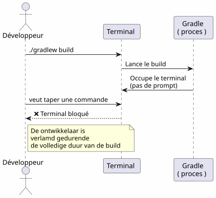
De meeste ontwikkelaars openen een nieuwe terminal. Maar er bestaat een elegantere, snellere en natieve oplossing: het beheer van taken.
De drie onmisbare opdrachten
Ctrl+Z — Tijdelijk stoppen (SIGTSTP)
`Ctrl+Z`verzend het signaal`SIGTSTP`naar het proces in de voorgrond. Het proces isopgehangen— niet gedood — en het terminal krijgt zijn prompt terug.
$ ./gradlew build
> Building...
^Z
[1]+ Stoppé ./gradlew build
$Het getal tussen haakjes`[1]`is dejobnummer. Le `+`geeft de standaardtaak aan.
fg — Voortzetten op de voorgrond
`fg`brengt de gepauzeerde taak naar de voorgrond. Het proces hervat precies waar het was gebleven.
$ fg
./gradlew build
> Building... (reprend où il en était)Met een specifiek jobnummer:
$ fg %2bg — Hervatten op de achtergrond
`bg`herneem het proces zonder de terminal te blokkeren. Ideaal voor lange builds.
$ bg
[1]+ ./gradlew build &
$Le `&`Aan het einde betekent dat het proces op de achtergrond draait.
jobs — Toon de taken van de shell
$ jobs
[1]- Stoppé vim README.md
[2]+ En cours ./gradlew build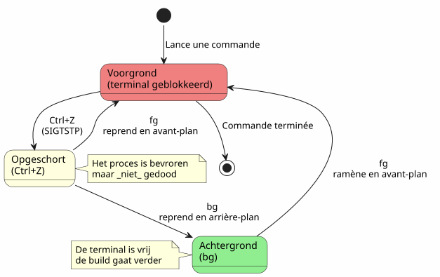
Scenario 1 : De lange build
Dit is het meest voorkomende gebruiksgeval. Je start een Gradle-build, de terminal is geblokkeerd, en je moet iets anders doen.
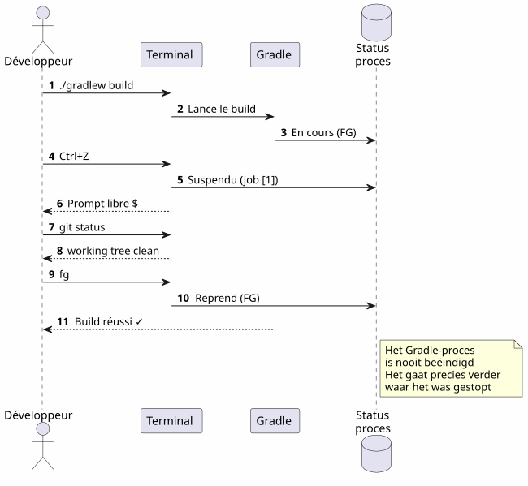
Stap voor stap
$ ./gradlew build
> Building...
^Z
[1]+ Stoppé ./gradlew build
$ git status
On branch main
nothing to commit, working tree clean
$ fg
./gradlew build
> Building...
BUILD SUCCESSFUL in 2m 34sScenario 2 : De vergeten redacteur
U bent in`vim`, u moet een ander bestand raadplegen zonder te vertrekken`vim`.
# Dans vim, en mode commande :
:shell
$ cat /path/to/other/file.txt
$ exit
# Retour dans vimMaar het is zwaar. Met`Ctrl+Z`, het is onmiddellijk :
# Dans vim, n'importe quel moment :
Ctrl+Z
[1]+ Stoppé vim README.md
$ cat /path/to/other/file.txt
# ... lire le fichier ...
$ fg
vim README.md
# Retour exact là où on en était, curseur en place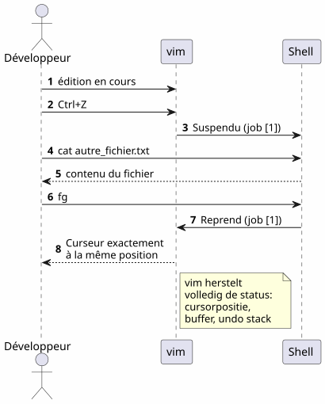
vim`herstelt volmaakt zijn staat na een`fg: cursorpositie, bufferinhoud, geschiedenis van ongedaan maken — alles wordt bewaard.
Scenario 3: Het proces opencode is onderbroken
Dit is het scenario dat dit artikel heeft gemotiveerd. U gebruikt`opencode`(CLI-hulpmiddel om een LLM op je code te besturen), en het proces is opgeschort.
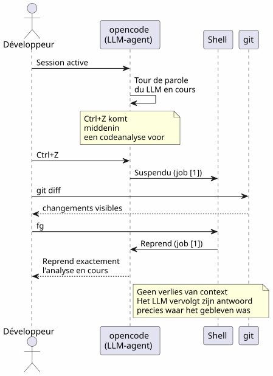
$ opencode
# ... session en cours, LLM analyse le code ...
^Z
[1]+ Stoppé opencode
$ git diff HEAD~1
# vérifier les changements récents
$ fg
opencode
# Le LLM reprend là où il s'était arrêtéHet voordeel is dubbel:
-
Geen contextverlies: de LLM-sessie, de gespreksgeschiedenis, de geopende bestanden — alles wordt behouden
-
Geen herstart: geen noodzaak om opencode opnieuw te starten, de context opnieuw te laden, het probleem aan de LLM uit te leggen
Scenario 4: Meerdere taken tegelijkertijd beheren
fg et `bg`accepteren een jobnummer om een specifiek proces te targeten wanneer meerdere zijn opgeschort
$ vim config.yml
^Z
[1]+ Stoppé vim config.yml
$ ./gradlew test
^Z
[2]+ Stoppé ./gradlew test
$ htop
^Z
[3]+ Stoppé htop
$ jobs
[1] Stoppé vim config.yml
[2]- Stoppé ./gradlew test
[3]+ Stoppé htop
$ fg %2
./gradlew test
# Le build reprend en avant-plan
$ bg %3
[3] htop &
# htop reprend en arrière-plan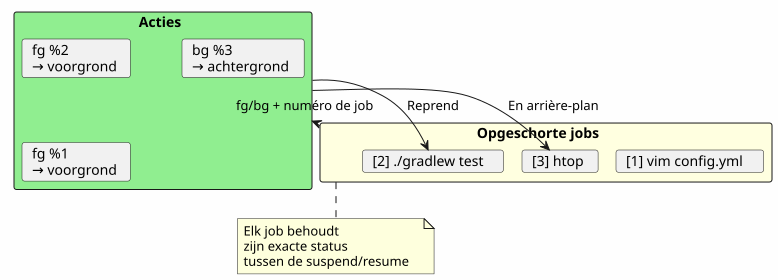
Overzicht van de jobopdrachten
| Bestelling | effect | Voorbeeld |
|---|---|---|
|
Suspendeer het proces op de voorgrond |
Verzending van`SIGTSTP` |
|
Hervat de standaardtaak in de voorgrond |
|
|
Hervat de job n op de voorgrond |
|
|
Neem de standaardtaak op de achtergrond |
|
|
Hervat job n op de achtergrond |
|
|
Lijst de taken van de huidige shell |
|
|
Voltooi de taak n |
|
Verschillen tussen fg, bg, Ctrl+Z, Ctrl+C en &
Veel ontwikkelaars verwarren deze mechanismen. Dit is een cruciale verduidelijking.
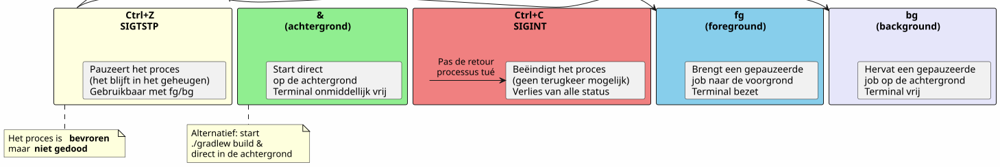
| Sneltoets/Commando | signaal | Effect | Teruggaan? |
|---|---|---|---|
|
|
Schors het proces (bevroren, in het geheugen) |
Ja:`fg` ou |
|
|
Stop het proces (afgerond) |
Nee : vernietigd proces |
|
|
Stop het proces + core dump |
Nee: proces vernietigd |
|
— |
Start direct in de achtergrond |
`fg`om het naar voren te brengen |
Ctrl+Z`isniet-destructief. Het proces is vastgehouden zoals het is, in het geheugen. U kunt direct verdergaan met`fg. Het is een pause, geen stop.
|
De volledige levenscyclus van een job
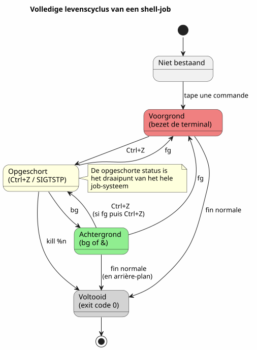
Geavanceerde tips
fg met de meest recente baan en de afwisseling
fg`zonder argument brengt de gemarkeerde taak+(het meest recente). Maar je kunt ook gebruiken%-`om op de vorige taak te richten :
$ vim file1.txt
^Z
[1]+ Stoppé vim file1.txt
$ vim file2.txt
^Z
[2]+ Stoppé vim file2.txt
$ fg # ramène job [2] (le plus récent)
$ fg %- # ramène job [1] (le précédent)een job netjes afmaken
$ jobs
[1]- Stoppé vim config.yml
[2]+ Stoppé ./gradlew test
$ kill %2 # envoie SIGTERM au job 2
$ kill -9 %1 # envoie SIGKILL au job 1 (force)désown : loskoppelen van de shell
disown`Verwijder een job uit de job-tabel van de shell. Het proces blijft draaien maar kan niet meer worden teruggehaald met`fg:
$ ./gradlew build &
[1] 12345
$ disown %1
# Le processus continue mais n'est plus lié au shell
# Ça survives à la fermeture du terminalCombineer met nohup voor langdurige processen
Zodat een proces blijft bestaan na het sluiten van de terminal:
$ nohup ./gradlew build &
[1] 12345
$ disown %1
# Le build continue même si vous fermez le terminal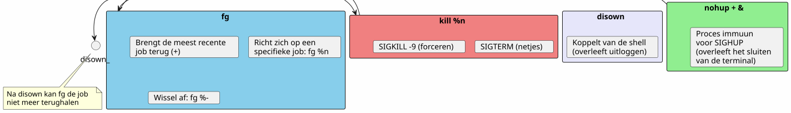
Valkuilen en veelvoorkomende fouten
Ctrl+Z en Ctrl+C verwarren
Dit is de meest voorkomende fout.`Ctrl+C`doodt het proces.`Ctrl+Z`Het opschort. Als je drukt op`Ctrl+C`Reflexmatig is de hele staat verloren — geopende bestanden, LLM-sessies, lopende builds.
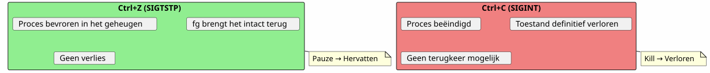
De jobs zijn lokaal voor de shell
jobs, fg et `bg`Ze werken alleen in de shell die de processen heeft gestart. Als je een nieuw terminal opent, zie je de jobs van de ander niet.
# Terminal 1
$ vim file.txt
^Z
[1]+ Stoppé vim file.txt
# Terminal 2 (nouveau)
$ jobs
# (rien — les jobs sont locaux au shell)Om de systeemwijdere processen te zien, gebruik`ps` ou htop:
ps aux | grep vimJobs overleven de afsluiting van de shell niet
Als je de terminal sluit, worden alle tijdelijk gestopte of op de achtergrond draaiende taken vernietigd. Om een proces in leven te houden, gebruik je`nohup`+disown(Empty output)
$ nohup ./gradlew build &
[1] 12345
$ disown %1
# Fermer le terminal → le build continueDe interactieve processen en fg
Sommige interactieve programma’s doen het niet goed na een`Ctrl+Z`+fg. Het is zeldzaam maar het gebeurt:
-
Sommige programma’s die signalen gebruiken (vim, htop, less hanteren goed`Ctrl+Z`)
-
Lange netwerkprogramma’s (ssh, opencode) herstellen zich meestal correct
-
Programma’s die de terminal (ncurses) wijzigen, kunnen soms de terminal in een onverwachte staat achterlaten.
In geval van een beschadigde terminal na een`fg`, typ :
resetOverzichtsdiagram
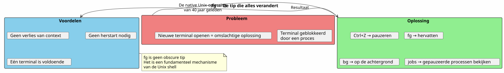
Waarom fg onderschat is
De meeste moderne ontwikkelaars ontdekken`fg`laat, of nooit. Enkele redenen :
-
IDE’s verbergen de terminal: VS Code biedt een ingebouwde terminal, maar meerdere tabbladen maken`fg`schijnbaar minder nodig
-
Grafische tools vervangen de CLI: bestandsbeheerders, systeemmonitors, grafische Git-clients
-
tmux en screen: deze multiplexers lossen hetzelfde probleem op een andere manier op, maar`fg`is eenvoudiger en altijd beschikbaar
Toch,`fg`is :
-
universeel: aanwezig in alle POSIX-shells (bash, zsh, fish…)
-
Zonder afhankelijkheid: niet nodig om tmux of screen te installeren
-
momentopname: twee slagen (
Ctrl+Z`dan`fg) voor opschorten en hervatten -
Contextbehoud: de staat van het proces is intact
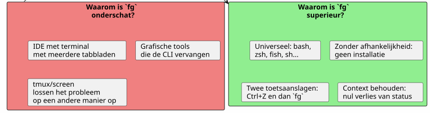
Technisch geheugen: de signalen
Voor de nieuwsgierigen, hier zijn de betrokken signalen :
| signaal | Naam | Verzonden door | Effect |
|---|---|---|---|
2 |
|
|
Onderbreking — beëindigt het proces |
3 |
|
|
Verlaat met core dump |
18 |
|
|
Interactieve stop — schort het proces op |
19 |
|
|
Doorgaan — hervat een onderbroken proces |
15 |
|
|
zuivere beëindiging |
9 |
|
|
Geforceerde beëindiging (kan niet worden onderschept) |
De volledige stroom :
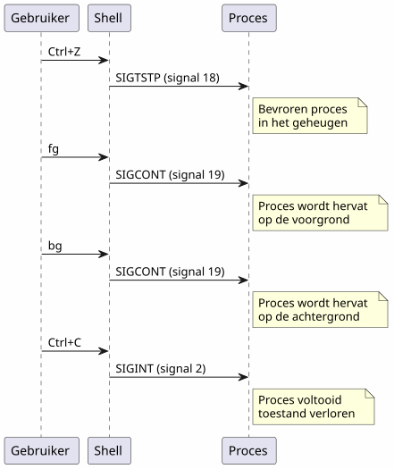
Conclusie
`fg`Het is geen duistere tip — het is een fundamenteel mechanisme van de Unix-shell, beschikbaar sinds de jaren 70. Het feit dat de meeste ontwikkelaars het negeren, is een symptoom van onze tijd: IDE’s en multiplexers hebben ons van de basis verwijderd.
Maar wanneer u op een SSH-server bent, in een minimale terminal, of u gewoon aan het gebruiken bent`opencode`en dat de LLM volop aan het werk is —Ctrl+Z, fg, bg, `jobs`zijn je beste vrienden.
_ Ctrl+Z schorst, fg hervat. Dit is de pauze-speel van de terminal. _
Referenties
-
man bash— sectie JOB CONTROL -
man signal— lijst van POSIX-signalen